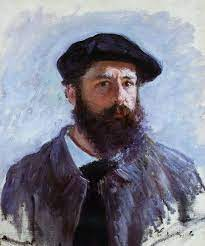
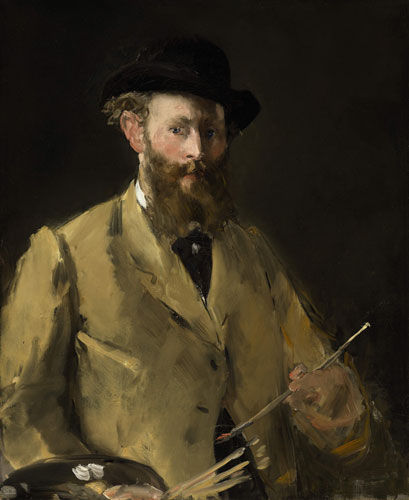
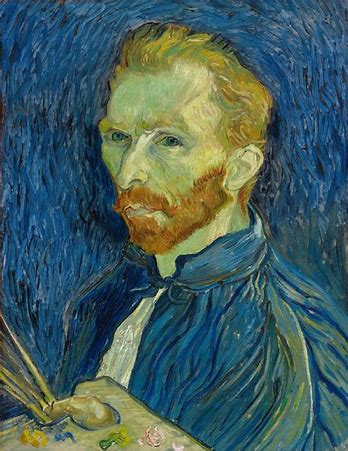

Artists

克劳德·莫奈(Claude Monet):
印象派画家最主要的代表人物，法国最重要的画家之一，印象派的理论和实践大部分都有他的推广。莫奈擅长光与影的实验与表现技法。他最重要的风格是改变了阴影和轮廓线的画法，在莫奈的画作中看不到非常明确的阴影，也看不到突显或平涂式的轮廓线。光和影的色彩描绘是莫奈绘画的最大特色。
日出·印象
干草垛
鲁昂大教堂
爱德华·马奈(Édouard Manet):
19世纪印象主义的奠基人之一，1832年出生于法国巴黎。他从未参加过印象派的展览，但他深具革新精神的艺术创作态度，却深深影响了莫奈、塞尚、梵高等新兴画家。受到日本浮世绘及西班牙画风的影响，他舍弃传统绘画的中间色调，将绘画从追求三元次立体空间的传统束缚中解放出来，朝二元次的平面创作迈出革命性的一大步。

草地上的午餐
喝苦艾酒的人
女神游乐厅的吧台

文森特·威廉·梵高(Vincent Willem van Gogh):
荷兰后印象派画家。他早期画风写实，受到荷兰传统绘画及法国写实主义画派的影响。1886年，他来到巴黎，结识印象派和新印象派画家，并接触到日本浮世绘的作品，视野的扩展使其画风巨变。此后，梵高的癫痫病时常发作，但神志清醒时他仍然坚持作画。1890年7月，梵高在精神错乱中开枪自杀，年仅37岁。
星空
麦田群鸦
阿尔勒的卧室
Contact Me!